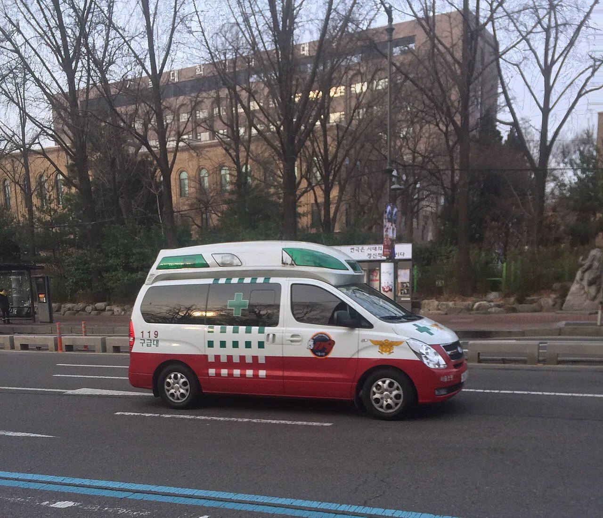

▲ 사고 직후 가장 먼저 확보해야 하는 것은 현장이 아니라 안전이다
접촉사고가 났습니다. 머릿속이 하얘지는 순간입니다.
이때 흔히 듣는 조언이 "차를 절대 옮기지 마라"입니다. 현장을 보존해야 과실 판단에서 불리하지 않다는 논리입니다.
그런데 이 조언은 상황에 따라 위험합니다. 특히 고속도로에서는 그대로 따르면 2차 사고로 이어질 수 있습니다. 순서를 나눠서 보겠습니다.
1. "차를 옮기지 마라"가 위험해지는 순간
이 조언의 취지는 이해할 수 있습니다. 차량 위치와 각도가 과실비율 판단의 근거가 되기 때문입니다.
그런데 전제가 있습니다. 안전한 장소여야 합니다.
고속도로나 자동차전용도로에서 차를 그대로 두고 대기하면, 뒤따라오는 차량이 그 차를 다시 들이받는 2차 사고가 발생할 수 있습니다. 그리고 고속도로 2차 사고의 치사율은 1차 사고보다 훨씬 높습니다.
해결책은 간단합니다. 사진을 찍고 옮기면 됩니다.
스마트폰으로 찍은 사진은 차량 위치·각도·파손 부위를 그대로 담습니다. 현장을 물리적으로 보존하지 않아도 판단 근거로 충분히 기능합니다. 사진을 남긴 뒤에는 즉시 안전한 곳으로 이동하는 것이 맞습니다.
2. 순서 — 안전 → 부상자 → 기록 → 신고 → 정보
실제로 지켜야 할 순서를 정리하면 이렇습니다.
🚨 사고 직후 행동 순서
- ①비상등을 켠다 — 반사적으로 해야 할 첫 동작
- ②안전 확보 — 차량 이동 가능하면 갓길·안전지대로. 이동 불가하면 차에서 내려 가드레일 밖으로 대피
- ③부상자 확인 — 본인·동승자·상대. 통증이 있으면 무리하게 움직이지 않고 119
- ④현장 기록 — 사진 촬영, 블랙박스 영상 보존
- ⑤신고 — 부상자 있으면 112 필수. 경미한 물피사고는 보험사 접수만으로도 가능
- ⑥상대 정보 확인 — 이름·연락처·차량번호·보험사
- ⑦보험사 접수
②번이 가장 중요합니다. 사고 충격으로 판단력이 흐려진 상태에서 차 안에 앉아 있거나 도로 위를 걸어 다니는 경우가 많습니다. 고속도로 사고 사망자 상당수가 차 밖에서 발생합니다.

▲ 부상 여부가 애매하면 119를 부르는 편이 안전하다. 통증은 시간이 지나 나타난다
3. 사진은 이 네 가지를 남겨야 한다
급한 상황에서 무엇을 찍어야 할지 헷갈립니다. 네 컷만 기억하면 됩니다.
| 구분 | 무엇을 | 왜 |
|---|---|---|
| 전체 구도 | 두 차량이 함께 보이는 원거리 사진 | 위치 관계와 차로 확인 |
| 파손부 근접 | 부딪힌 부위를 가까이 | 충격 방향과 강도 |
| 바퀴 방향 | 양쪽 차량 앞바퀴 각도 | 진행 방향과 조작 여부 |
| 노면 흔적 | 스키드마크·파편·유류물 | 제동 여부와 충돌 지점 |
이 중 바퀴 방향이 의외로 중요합니다. 운전자가 어느 방향으로 조작하고 있었는지를 보여주는 증거이고, 차량을 옮기면 사라집니다.
노면 흔적도 시간이 지나면 없어집니다. 파편의 위치는 실제 충돌 지점을 알려주는데, 차를 옮긴 뒤에는 복원할 수 없습니다.
여기에 하나 덧붙이면, 주변 CCTV와 다른 차량 블랙박스가 있는지도 확인해두면 좋습니다. 분쟁이 커질 때 결정적인 자료가 됩니다.

▲ 블랙박스 영상은 사고 직후 별도로 보관해야 한다. 방치하면 덮어써진다
4. 블랙박스 영상, 그냥 두면 사라진다
많은 분이 놓치는 부분입니다. 블랙박스가 있다고 안심하면 안 됩니다.
대부분의 블랙박스는 메모리가 꽉 차면 오래된 영상을 덮어쓰는 방식으로 작동합니다. 사고 충격이 감지되면 별도 폴더에 저장하는 기능이 있지만, 충격 감지 민감도 설정에 따라 작동하지 않을 수도 있습니다.
그래서 사고 직후 해야 할 일이 있습니다. 메모리카드를 빼거나, 해당 구간 영상을 즉시 스마트폰으로 옮기는 것입니다.
"나중에 확인하지" 하고 계속 주행하면 정작 필요한 영상이 덮어써진 상태로 발견됩니다.
5. 절대 하지 말아야 할 세 가지
①현장에서 과실을 인정하지 않습니다. "제가 잘못했네요"라는 말이 그대로 근거가 될 수 있습니다. 과실비율은 보험사와 심의기구가 판단합니다. 현장에서는 사실만 확인하면 됩니다.
②현금 합의를 서두르지 않습니다. 특히 인적 피해가 있을 때는 위험합니다. 사고 직후 괜찮다고 했던 사람이 며칠 뒤 통증을 호소하는 경우가 흔합니다. 현금으로 정리한 뒤에는 대응이 어려워집니다.
③차 안에서 기다리지 않습니다. 특히 고속도로에서 그렇습니다. 차 안이 안전해 보이지만, 2차 충돌이 나면 차 안이 가장 위험한 장소입니다.
반대로 꼭 해야 할 것도 하나 있습니다. 상대 차량 번호판을 사진으로 남기는 것입니다. 연락처를 받았어도 번호판 사진이 있어야 확실합니다.

▲ 고속도로에서는 차 안에 머무는 것이 가장 위험하다. 가드레일 밖으로 나가야 한다
6. 정리 — 5분 안에 할 일
사고 직후 5분 안에 해야 할 것을 압축하면 이렇습니다.
비상등 → 안전 확보 → 부상자 확인 → 사진 4컷 → 신고 → 상대 정보 → 블랙박스 영상 보관.
그리고 기억할 원칙 하나. "차를 옮기지 마라"는 안전한 장소에서만 유효합니다. 고속도로나 곡선 구간이라면 사진을 남기고 즉시 이동하는 것이 맞습니다.
현장 보존은 과실비율을 위한 것이고, 대피는 목숨을 위한 것입니다. 순서가 헷갈릴 때는 후자가 먼저입니다.